10 point 1. Organism and its Environment
10 point 2. Habitat
10 point 3. Major Abiotic Components or Factors
10 point 4. Concept of Biome and their Distribution
10 point 5. Responses to abiotic factors
10 point 6. Adaptations
10 point 7. Populations
10 point 8. Population attributes
10 point 9. Population age distribution
10 point 10. Growth models or Curves
10 point 11. Population regulation
10 point 12. Population interaction
To gain knowledge or insight about:
The local and geographical distribution - abundance of organisms.
Temporal changes in the occurrence, abundance and activities.
Interrelationship between organism in population and communities.
Structural adaptation and functional adjustment of organisms to their physical environment.
The evolutionary development of all these interrelations.
Population growth, models, regulation.
Animal associations – intraspecific, interspecific.
The word ‘ecology’ is derived from the Greek term ‘oikos’, meaning ‘house’ and logos, meaning ‘study’. Thus, the study of the environmental ‘house’ includes all the organisms in it and all the functional processes that make the house habitable.
The study of ecology encompasses different levels-organism, population, community, ecosystem, etc., In ecology, the term population, originally coined to denote a group of people is broadened to include groups of individuals of any one kind of organism. Community in the ecological sense (designated as ‘biotic community’) includes all the populations occupying a given area. The community (Biotic) and the non-living environment (Abiotic) function together as an ecological system (or) ecosystem. Biome is a term in wide use for a large regional or sub continental system characterized by a major vegetation type. The largest and most nearly self-sufficient biological system is often designated as the Ecosphere, which includes all the living organisms of the Earth, interacting with the physical environment to regulate their distribution, abundance, production and evolution.
Every living organism has its own specific surrounding, medium or environment with which it continuously interacts and develops suitable adaptations for survival there. Environment is a collective term which includes the different conditions in which an organism lives or is present. The common and influencing factors in any environment are light, temperature, pressure, water, salinity. These are collectively referred to as Abiotic components.
Environments are variable and dynamic, in which temperature changes and light changes are diurnal and seasonal. These influence the organisms inhabiting them. An organism’s growth, distribution, number, behavior and reproduction is determined by the different factors present in the environment.
Habitat refers to the place where an organism or a community of organisms live, including all biotic and abiotic factors or conditions of the surrounding environment. The collection of all the habitat areas of a species constitutes its geographical range. Organisms in a habitat interact with each other and can be part of trophic levels to form food chains and food webs.
Examples: In a xerophytic habitat, the camel is able to use water efficiently and effectively for evaporative cooling through their skin and respiratory system. They excrete highly concentrated urine and can also withstand dehydration upto 25% of the body weight. The hoofs and hump are also suitable adaptations for survival in this dry sandy environment.
In an aquatic media, maintaining homeostasis and osmotic balance is a challenge. So, marine animals have appropriate adaptations to prevent cell shrinkage. While freshwater organisms have suitable adaptations to withstand bursting of their cells. Apart from this, organisms such as fish have a wide range of adaptations like fins (locomotion), streamlined body (aerodynamic), lateral line system (sensory), gills (respiration), air sacs (floatation) and kidneys (excretion).
As every organism has its unique habitat, so also it has an ecological niche which includes the physical space occupied by an organism and its functional role in the community. The ecological niche of an organism not only depends on where it lives but also includes the sum total of its environmental requirements.
Charles Elton (1927) was the first to use the term ‘niche’ as the functional status of an organism in its community. Groups of species with comparable role and niche dimensions within a community are termed ‘guilds’. Species that occupy the same niche in different geographical regions, are termed ‘ecological equivalents’.
Many animals share the same general habitat. But their niches are well defined. The life style of an individual population in the habitat is known as its niche. For example, crickets and grasshoppers are closely related insects that live in the same habitat, yet they occupy different ecological niches. The grasshopper is very active during daylight. It can usually be found on a plant, feeding on the plant parts. Although the cricket lives in the same field, it is quite different. During the day, the cricket hides under leaves or plant debris and is usually inactive. It is active at night time (nocturnal). The cricket and the grasshopper do not interfere with each other’s activities in the same habitat. Thus, niche of an organism can be defined as the total position and function of an individual in its environment.
In a pond ecosystem, where Catla, Rohu and Mrigal are present, the ecological niche of the Catla is a surface feeder, Rohu is a column feeder and Mrigal is a bottom feeder. Their mouths are designed to suit their niche and hence have different positions and functions in their habitat (Figure 10 point 1).
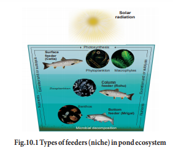
The abiotic factors include the chemical and physical factors which influence or affect organisms and their functioning in their environment. The common abiotic factors are:
Temperature or degree of hotness and coldness is an essential and variable factor in any environment. It influences all forms of life by affecting many vital activities of organisms like metabolism, behaviour, reproduction, development and even death in the Biosphere. The minimum and maximum temperature of an environment regulates the survival of a cell.
vant Hoff’s rule vant Hoff proposed that, with the increase of every 10 degree Celsius, the rate of metabolic activity doubles or the reaction rate is halved with the decrease of 10 degree Celsius. This rule is referred as the van’t Hoff’s rule. The effect of temperature on the rate of reaction is expressed in terms of temperature coefficient or Q10 value. The Q 10 values are estimated taking the ratio between the rate of reaction at X degree Celsius and rate of reaction at (X-10 degree Celsius). In the living system the Q 10 value is about 2.0. If the Q 10 value is 2.0, it means 10 degree Celsius increase and the rate of metabolism doubles.
The metabolism of organisms is regulated by enzymes which are temperature sensitive. In many organisms, determination of sex and sex ratio, maturation of gonads, gametogenesis and reproduction is influenced by temperature. In certain environments, the size and colouration of animals are influenced by temperature. Birds and mammals attain greater body size in colder regions than warmer regions (Bergmann’s rule). Warm blooded animals, living in colder climates, tend to have shorter limbs, ears and other appendages when compared to the members of the same species in warmer climates (Allen’s rule). In some aquatic environments, an inverse relationship between water temperature and fish meristic characters is observed - lower the temperature, more the vertebrae (Jordon’s rule).
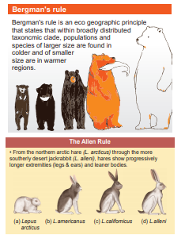
Temperature influences the distribution of organisms. The tropics have higher diversity and density of populations, when compared to temperate and polar regions.
Adaptation to temperature is essential for the survival of the species/organisms. Organisms which can survive a wide range of temperature are referred to as Eurytherms (cat, dog, tiger, human). Eurytherms can be an evolutionary advantage: adaptations to cold temperatures (cold-eurythmy) are seen as essential for the survival of species during ice ages. In addition, the ability to survive in a wide range of temperatures increases a species' ability to inhabit other areas, an advantage for natural selection. Eurythermy is an aspect of thermoregulation in organisms.
Those organisms which can tolerate only a narrow range of temperature are Stenotherms (Fish, Frogs, Lizards and Snakes).
Over the course of time, by evolution, animals of different ecological habitats have developed different variations and adaptations to temperature changes. It enabled them to survive in different habitats and develop niches. In case of extreme temperatures, organisms have adapted by forming heat resistant spores, cysts (Entamoeba), antifreeze proteins (Arctic fishes). Hibernation (winter sleep) and Aestivation (Summer sleep) are useful adaptations to overcome extreme winters and summers. In certain conditions, migration is an appropriate adaptation to overcome extreme temperatures and resultant water and food scarcity. (Figure 10 point 2).
It is an important and essential abiotic factor. Ecologically, the quality (wavelength or colour), the intensity (actual energy in gram calories) and duration (length of day) of light are considered significant for organisms.
Light influences growth, pigmentation, migration and reproduction. The intensity and frequency of light influences metabolic activity, induce gene mutations (UV, X- rays). Light is essential for vision. This is proved by the poorly developed or absence of eyes in cave dwelling organisms. Diapause is also influenced by light in animals. Gonads of birds become more active with increasing light in summer. Light influences the locomotion and movement of lower animals.
Phototaxis: The movement of organism in response to light, either towards the source of light as in Moths (positive phototaxis) or away from light (Euglena, Volvox, earthworm (negative phototaxis).
Phototropism: The growth or orientation of an organism in response to light, either towards the source of light (positive phototropism) as seen in Sunflower, or a way from light (negative phototropism) as in case of the root of plants.
Photokinesis: A change in the speed of locomotion (or frequency of turning) in a motile organism or cell which is made in response to a change in light intensity is called Photokinesis. It involves undirected random movement in response to light.
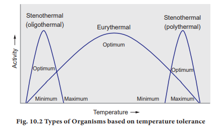
Fig. 10 point 2 Types of Organisms based on temperature tolerance
Life on earth began in the seas and water is essential for the survival of all forms of life. About three-fourth of the earth’s surface is covered with water (hydrosphere). Water is found in three states: gaseous, liquid, and solid.
There are two types of water on Earth. They are the Fresh water (rivers, lakes, ponds) and the Salt water (seas and oceans). Based on the dissolved salts, water can be hard water (sulphates or nitrates of Calcium or Magnesium) or soft water. If hardness can be removed by boiling, it is temporary hard water, and if boiling does not help, it is permanent hard water.
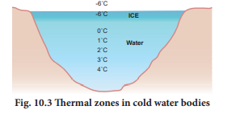
It is a mixture of organic matter, minerals, gases, liquids and organisms that together support life. The soil zone is known as Pedosphere. Soil is formed from rocks which are the parent materials of soil, by weathering and is called embryonic soil (Pedogenesis). It has four major functions-
1. medium for plant growth
2. means for water storage and purification
3. modifier of earth’s atmosphere
4. habitat for many organisms, which in turn modify the soil
Soil is formed of many horizontal layers called as Soil Profile.
1. Texture of soil – The texture of soil is determined by the size of the soil particles. The types of soil include sand, silt and clay on the basis of their size differences.
2. Porosity – The space present between soil particles in a given volume of soil are called pore spaces. The percentage of soil volume occupied by pore space or by the interstitial spaces is called porosity of the soil.
3. Permeability of soil The characteristic of soil that determines the movement of water through pore spaces is known as soil permeability. Soil permeability is directly dependent on the pore size. Water holding capacity of the soil is inversely dependent on soil porosity.
4. Soil Temperature Soil gets its heat energy from solar radiation, decomposing organic matter, and heat from the interior of earth. Soil temperature effects the germination of seeds, growth of roots and biological activity of soil-inhabiting micro-and macroorganisms.
5. Soil water In soil, water is not only important as a solvent and transporting agent, but also maintains soil texture, arrangement and compactness of soil particles, making soil habitable for plants and animals.
Wind is the natural movement of air of any velocity from a particular direction. The two main causes are differential heating between the equator and the poles and the rotation of the planet (Coriolis effect). Wind helps to transport pollen grains, seeds, and even flight of birds. While it is the source of wind energy, it also causes erosion. Wind speed is measured with an Anemometer.
Moisture in the form of invisible vapor in the atmosphere is called humidity. which is generally expressed in terms of absolute humidity, relative humidity or specific humidity. Absolute humidity is the total mass of water vapour present in a given volume or mass of air. It does not take temperature into consideration.
Relative humidity is the amount of water vapour present in air and is expressed as a percentage of the amount needed for saturation at the same temperature Relative humidity is expressed as a percentage; a high percentage means that the air-water mixture is more humid at a given temperature. Humidity is measured with a Hygrometer.
This factor is mainly the elevation or gradient and it affects temperature and precipitation in an ecosystem or biome. As altitude increases, temperature and density of oxygen decreases. Higher altitudes usually receive snow instead of rain because of low temperature.
Animals are known to modify their response to environmental changes (stress) in reasonably short time spans. This is known as Acclimatization. This is observed when people who have moved from the plains to higher altitudes show enhanced RBC count within a few days of settling in their new habitat. This helps them cope with lower atmospheric oxygen and higher oxygen demand.
Biomes are large regions of earth that have similar or common vegetation and climatic conditions. They play a crucial role in sustaining life on Earth. They are defined by their soil, climate, flora and fauna. Biomes have distinct biological communities that have been formed in response to a shared physio-chemical climate. Biomes are seen to even spread across continents. Thus, it can be observed that a biome is a broader term than habitat. Any biome can comprise a variety of habitats. Factors such as temperature, light, water availability determine what type of organisms and adaptations are observed in a biome (Figure 10 point 4).
1. Location, Geographical position (Latitude, Longitude)
2. Climate and physiochemical environment
3. Predominant plant and animal life
4. Boundaries between biomes are not always sharply defined. Transition or transient zones are seen as in case of grassland and forest biomes (Figure 10 point 5).
They occupy about 71 percentage of the biosphere. The aquatic biome is home to millions of aquatic organisms like fishes. The climate of coastal zones are influenced by aquatic bodies.
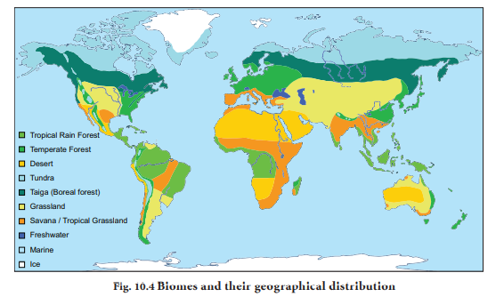
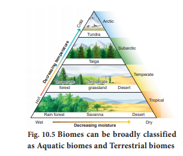
1. Freshwater (Lakes, ponds, rivers)
2. Brackish water (Estuaries or Wetlands)
3. Marine (Coral reefs, pelagic zones and abyssal zones)
These are large communities of plants and animals that occupy a distinct region. They include grassland, tundra, desert, tropical rainforest, and deciduous and coniferous forests. Terrestrial biomes are distinguished primarily by their predominant vegetation, and are mainly determined by climate, which in turn, determines the organisms inhabiting them. These include the keystone species and indicator species which are unique to their respective biomes. The terrestrial biomes are a source of food, O 2 and act as C O 2 sink, apart from the climate regulatory role.
Major Biomes of the Earth
Tundra biome, Taiga biome, Grassland biome, Alpine biome, Forest biome and Desert biome.
1. This is the almost treeless plain in the northern parts of Asia, Europe and North America.
2. Winters are long with little daylight, Summers are short, with long daylight hours.
3. Precipitation is less than 250 mm per year. It is a zone of permafrost.
4. Dwarf willows, birches, mosses, grasses, sedges are the flora here.
5. Reindeer, arctic hare, musk ox, lemmings are important Tundra herbivores. Some important carnivores are the arctic fox, arctic wolf, bobcat and snowy owl. Polar bears live along coastal areas.
6. Because of the severe winters, many of the animals are migratory. For example, the many shore birds and waterfowl such as ducks and geese, nest in the Tundra during the summer and migrate south for the winter.
1. The Taiga is 1300-1450 kilometer wide zone south of the Tundra.
2. This area has long and cold winters.
3. Summer temperature ranges from 10 degree celsius to 21 degree celsius.
4. Precipitation ranges about 380 to1000 mm annually.
5. The Taiga is a forest of coniferous trees such as spruce, fir and pine. This is a major source for the logging industry.
6. Important migratory herbivores include moose, elk, deer and reindeer. Moose and reindeer migrate to the Taiga for winter and to the Tundra for summers. The common smaller mammals are herbivorous squirrels, snowshoe hare and predatory pine martens. Important predators include the timber wolf, grizzly bear, black bear, bobcat and wolverines. (Figure 10 point 6)
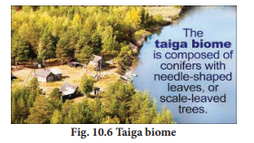
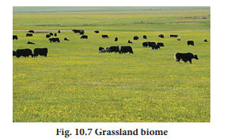
The alpine zone (zone between timber line and snow zone) includes in the descending order, a sub-snow zone immediately below the snow zone, a meadow zone in the centre and a shrub zone which gradually merges into the timber zone.
The snow zone of Himalayas lies over 5100 meter above mean sea level and alpine zone exists at a height of 3600 meter. From an ecological view point, the zone above the limits of tree growth (timber line) exhibits extreme environmental conditions which greatly influence the biota of this region.
Alpine zone of Himalayas is characterized by sparseness of animal groups. Many invertebrates of alpine zone are predatory and occur in lakes, streams and ponds. Among vertebrates, fishes and amphibians are totally lacking and reptilian fauna is greatly impoverished.
Flora of alpines includes alpine phacelia, bear grass, bristlecone pine, moss campion, poly lepis forest, pygmy bitterroot, and wild potato.
Historically biomes are known to move as climate changes. A classic example is the Sahara Desert, which years ago was supposed to be a lush landscape with river flowing through it. Accordingly, appropriate fauna like Hippos, Giraffes, Crocodiles lived amid abundant trees. Over course of time the climate dried out. It has now become the planets largest desert. The animals have migrated out to adjacent regions with more favourable conditions. (Source: National Geography)
Forest is a broad term used to describe areas where there are a large number of trees (Figure 10.8). The forest biomes include a complex assemblage of different kinds of biotic communities. The major forest biomes are the Tropical forests and the Temperate forests.
Box item
More than half of earth’s tropical forests have already been destroyed.
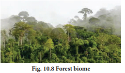
Box item
Only scattered remnants of original temperate forests remain today.
Rainfall is lowest in the Atacama Desert of Chile, where it averages less than 15 millimeters. Some years are even rainless. Inland Sahara also receives less than 15 millimeter rainfall a year. Rainfall in American deserts is higher almost 280 millimeter a year.
Every living organism responds to its environment. There are various ways by which organisms respond to abiotic conditions. Some organisms can maintain constant physiological and morphological conditions or undertake steps to overcome the environmental condition, which in itself is a response (Figure 10 point 9).
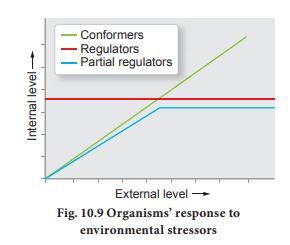
The types of responses observed are
Regulate: Some organisms are able to maintain homeostasis by physiological means which ensures constant body temperature, ionic or osmotic balance. Birds, mammals and a few lower vertebrate and invertebrate species are capable of such regulation.
Conform: Most animals cannot maintain a constant internal environment. Their body temperature changes with the ambient temperature. In aquatic animals like fishes, the osmotic concentration of the body fluids changes with that of the ambient water osmotic concentration. Such animals are called Conformers. In case of extreme condition, the inhabitants relocate themselves as in migration.
Migrate: Organisms tend to move away temporarily from a stressful habitat to a new, hospitable area and return when the stressful period is over. Birds migrate from Siberia to Vedanthangal in Tamilnadu to escape from the severe winter periods.
Suspend: In certain conditions, if the organisms is unable to migrate, it may avoid the stress by becoming inactive. This is seen commonly in bears going into hibernation during winter. Some snails and fish go into aestivation to avoid summer related problems like heat and desiccation. Some lower animals suspend a certain phase of their life cycle, which is referred to as diapause.
In biology, adaptation is a dynamic evolutionary process that fits organisms to their environment and enhancing their evolutionary fitness. Adaptations can be a phenotypic or adaptive trait with a functional role in each individual organism that is maintained and has been evolved by natural selection. The adaptive traits may be structural adaptation, behavioral adaptation and physiological adaptation.
The external and internal structures of animals can help them to adapt better to their environment. Some of the most common examples are mammals growing thicker fur to survive freezing climates. Some of the most attractive adaptations in nature occur for reasons of crypsis (Example camouflage) and mimicry. Cryptic animals are those which camouflage perfectly with their environment and are almost impossible to detect. Certain reptiles and insects such as chameleons and stick insects show this type of adaptation, which helps in prey capture or to evade from predators. Likewise, horse legs are suitable for fast running and adapted for grasslands and similar terrestrial environments.
Action and behaviour of animals are instinctive or learned. Animals develop certain behavioural traits or adaptations for survival. Fleeing from a predator, hiding during sleep, seeking refuge from climate change or moving to find different food sources are all behavioral adaptations. The two most characteristic forms of behavioral adaptations are migration and courtship. Migration allows the animals to find better resources or evade threat. Courtship is a set of behavioral patterns to find a mate to reproduce. Most nocturnal animals remain underground or inactive during daytime. This is a modification of their feeding and activity pattern or habit or behaviour.
Box item
Ethology is the scientific study of animal behaviour, under natural conditions.
These are adaptations of organisms that help them to live and survive in their environment with unique niches. Example: Lions have sharp canines to hunt and tear meat and a digestive system suitable for digesting raw meat. The two most well-known physiological adaptations are hibernation and aestivation. These are two different types of inactivity where the metabolic rate slows down so much that the animal can survive without eating or drinking. Aquatic medium and terrestrial habitats have their own respective environmental conditions. Hence organisms have to evolve appropriate adaptations to select suitable habitats and niches.
1. The pectoral fins and dorsal fins act as stabilizers or balancers and the caudal fin helps in changing the direction as a rudder.
2. Arrangement of body muscles in the form of bundles (myotomes) help in locomotion.
3. Stream lined structure helps in the swift movement of the animals in water.
4. Respiration by gills making use of gases dissolved in water.
5. Presence of air-bladders filled with air for buoyancy.
6. Presence of lateral-line system. They function as rheo receptors which is helpful in echolocating objects in water.
7. Integuments rich in mucous glands are protected by scales.
8. Maintain water and ionic balance in its body with excretory structures.
1. Earthworms and land Planarians secrete a mucus coating to maintain a moist situation for burrowing, coiling, respiration, etc.,
2. Arthropods have an external covering over the respiratory surfaces and well-developed tracheal systems.
3. In vertebrate skin, there are many cellular layers besides the well protected respiratory surfaces that help in preventing loss of water.
4. Some animals obtain their water requirement from food as partial replacement of water lost through excretion.
5. Birds make nests and breed before the rainy season as there is availability of abundant food. But during drought birds rarely reproduce.
6. Camels are able to regulate water effectively for evaporative cooling through the skin and respiratory system and excrete highly concentrated urine, and can also withstand dehydration up to 25% of their body weight.
Population is defined as any group of organisms of the same species which can interbreed among themselves, and occupy a particular space and function as part of a biotic community. A population has various properties like population density, natality (birth rate), mortality (death rate), age distribution, biotic potential, dispersion and ‘r’, ‘K’ selected growth forms. A population possesses genetic characteristics that are directly related to their adaptiveness, reproductive success, and persistence in their habitats over time. Life history of an organism is an important part of this attribute. The population has a definite structure and function that can be described with reference to time.
The density of a population refers to its size in relation to unit of space and time. Population density is the total number of that species within a natural habitat. The size of the population can be measured in several ways, including abundance (absolute number in population), numerical density (number of individuals per unit area (or) volume) and biomass density (biomass per unit area (or) volume). The population density of a species can also be expressed with reference to the actual area of habitat available to the species When the size of individuals in the population is relatively uniform then density is expressed in terms of number of individuals (numerical density).
Populations increase because of natality. Natality is equivalent to birth rate and is an expression of the production of new individuals in the population by birth, hatching, germination (or) fission. The two main aspects of reproduction, namely fertility and fecundity play a significant role in a population. Natality rate may be expressed in crude birth rate number of organisms born per female per unit time.
Birth rate (b) equal to Number of birth per unit time by Average population
Mortality is the population decline factor and is oppposite to natality. Mortality can be expressed as a loss of individuals in unit time or death rate. Generally, mortality is expressed as specific mortality, that is, the number of members of an original population dying after the lapse of a given time. The crude death rate of a population can be calculated by the equation.
Death rate (d) equal to Number of death per unit time by Average population
The rate of mortality (death) is determined by density. Mortality is high at high density because of the hazards of overcrowding, increased predation and spread of disease.
Mortality rates vary among species and are correlated and influenced by a number of factors such as destruction of nests, eggs or young by storms, wind, floods, predators, accidents and desertion by parents.
Populations have a tendency to disperse or spread out in all directions, until some barriers are reached. This is observed by the migration of individuals into (Immigration) or out (Emigration) of the population area.
Migration is a peculiar and unique kind of mass population movement from one place to another and back. To avoid the severe winter cold, Siberian cranes migrate from Siberia to Vedanthangal in Tamil Nadu and return back in spring. Some fishes are known to migrate from sea to fresh water (anadromous migration, Salmon) and some from fresh water to sea (catadromous migration, Eel).
Emigration
Under natural conditions, emigration usually occurs when there is overcrowding. This is regarded as an adaptive behavior that regulates the population in a particular site and prevents over exploitation of the habitat. Further, it leads to occupation of new areas elsewhere.
It leads to a rise in population levels. If the population increases beyond the carrying capacity, it can result in increased mortality among the immigrants or decreased reproductive capacity of the individuals.
Both emigration and immigration are initiated or triggered by weather and other abiotic and biotic factors.
The proportion of the age groups (pre-reproductive, reproductive and post reproductive) in a population is its age distribution attribute. This determines the reproductive status of the population at the given time and is an indicator of the future population size.
Usually a rapidly growing population will have larger proportion of young individuals. A stable population will have an even distribution of various age classes. A declining population tends to have a larger proportion of older individuals (Figure 10 point 10).
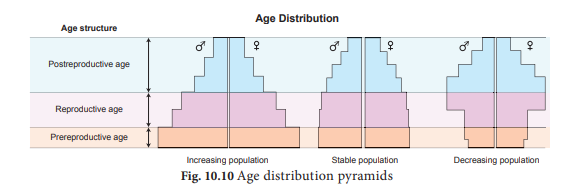
Populations show characteristic growth patterns or forms. These patterns can be plotted and termed as J-shaped growth form and S-shaped growth form (Sigmoid form).
When a population increases rapidly in an exponential fashion and then stops abruptly due to environmental resistance or due to sudden appearance of a limiting factor, they are said to exhibit J-shaped growth form. Many insects show explosive increase in number during the rainy season followed by their disappearance at the end of the season (Figure 10 point 11).
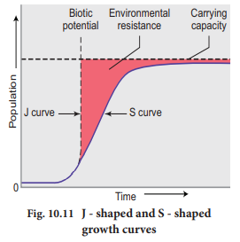
Some populations, as in a population of small mammals, increase slowly at first then more rapidly and gradually slow down as environmental resistance increases whereby equilibrium is reached and maintained. Their growth is represented by S shaped growth curve.
Box item
It is the maximum reproductive capacity of an organism under optimum environmental conditions.
The maximum number of organism that a region can support without environmental degradation is called carrying capacity.
Is the sum total of the environmental limiting factors, both biotic and abiotic, which together act to prevent the biotic potential of an organism from being realized.
Table 10 point 2 Differences between r- selected and K selected species
r selected species (r - Reproductive capacity) |
K selected species (K - Carrying capacity) |
Smaller sized organisms |
Larger sized organisms |
Produce many offspring |
Produce few offspring |
Mature early |
Late maturity with extended parental care |
Short life expectancy |
Long life expectancy |
Each individual reproduces only once or few times in their life time |
Can reproduce more than once in lifetime
|
Only few reach adulthood |
Most individuals reach maximum life span |
Unstable environment, density independent |
Stable environment, density dependent |
The inherent tendency of all animal populations is to increase in number. But it does not increase indefinitely. Once the carrying capacity of the environment is reached, population numbers remain static or fluctuate depending on environmental conditions. This is regulated by many factors which are
1. Density independent – Extrinsic factors
2. Density dependent - Intrinsic factors
Extrinsic factors include availability of space, shelter, weather, food, etc. Intrinsic factors include competition, predation, emigration, immigration and diseases.
Organisms belonging to different populations interact for food, shelter, mating or for other necessities. Interaction may be intra specific (interaction within the members of same species) or inter specific (among organisms of different species).
Intra specific association is observed for all livelihood processes like feeding, territoriality, breeding and protection.
Interspecific associations or interactions can be:
Neutral: where different species live together but do not affect each other.
Positive: it is a symbiotic relationship in which no organism in association is harmed and either one or both may be benefitted. It is of two types – Mutualism and Commensalism.
Negative: One or both of the interacting organisms will be affected as in case of competition, predation, parasitism.
The common types of interspecific inter actions are:
Table 10 point 3 Analysis of two species population interactions
Serial number |
TYPES OF INTERACTION |
SPECIES 1 |
SPECIES 2 |
GENERAL NATURE OF INTERACTION |
EXAMPLES
|
1 |
Amensalism |
minus |
0 |
The most powerful animal or large organisms inhibits the growth of other lower organisms |
Animals destroyed at the feet of elephants |
2 |
Mutualism |
plus |
plus |
Interaction favorable to both and obligatory |
Between crocodile and bird |
3 |
Commensalism |
plus |
0 |
Population 1, the commensal benefits, while 2 the host is not affected |
Sucker fish on shark
|
4 |
Competition |
minus |
minus |
Direct inhibition of each species by the other |
Birds compete with squirrels for nuts and seeds |
5 |
Parasitism |
plus |
minus |
Population 1, the parasite, generally smaller than 2, the host |
Ascaris and tapeworm in human digestive tract |
6 |
Predation |
plus |
minus |
Population 1, the predator, generally larger than 2, the prey |
Lion predatory on deer |
Ecology is the study of the relationships of living organisms with the abiotic and biotic components of their environment. Temperature, Light, Water, Soil, Humidity, Wind and Topographic factors are the important physical components of the environment to which the organisms are adapted in various ways. Maintenance of a constant internal environment by the organisms contributes to optimal performance, but only some organisms (regulators) are capable of homeostasis in the fact of changing external environment. Others simply conform. Many species have evolved adaptations to avoid unfavourable conditions in space or in time.
Population ecology is an important area of ecology. A population is a group of individuals of a given special sharing or competing for similar resources in a defined geographical area. Populations have attributes that individual organisms do not, such as natality and mortality, sex ratio and age distribution. The proportion of different age groups of males and females in a population is often presented graphically as age pyramid, its shape indicated whether a population is stationary, growing or declining.
Ecological effects of any factors on a population are generally reflected in population density. Population grow through births and immigration and decline through deaths and emigration. When resources are unlimited, the growth is usually exponential but when resources become progressively limiting the growth pattern turns logistic. In either case, growth is ultimately limited by the carrying capacity of the environment. The intrinsic rate of natural increase is a measure of the inherent potential of a population to grow.
Population of the same or different species in a habitat do not live in isolation but interact in many ways. These interactions may be intra specific or interspecific. They may be positive, negative or neutral in nature.
1. All populations in a given physical area are defined as
a) Biome
b) Ecosystem
c) Territory
d) Biotic factors
Answer: a) Biome
2. Organisms which can survive a wide range of temperature are called
a) Ectotherms
b) Eurytherms
c) Endotherms
d) Stenotherms
Answer: b) Eurytherms
3. The interaction in nature, where one gets benefit on the expense of other is...
a) Predation
b) Mutualism
c) Amensalism
d) Commensalism
Answer: a) Predation
4. Predation and parasitism are which type of interactions?
a) (plus, plus)
b) (plus, zero)
c) (minus, minus)
d) (plus, minus)
Answer: d) (plus, minus)
5. Competition between species leads to
a) Extinction
b) Mutation
c) Amensalism
d) Symbiosis
Answer: a) Extinction
6. Which of the following is an r-species
a) Human
b) Insects
c) Rhinoceros
d) Whale
Answer: b) Insects
7. Match the following and choose the correct combination from the options given below.
Column 1 Column 2
A. Mutalism 1. Lion and deer
B. Commensalism 2. Round worm and man
C. Parasitism 3. Birds compete with squirrels for nuts
D. Competition 4. Sea anemone on hermit crab
E. Predation 5. Barnacles attached to Whales.
a) A 4, B 5, C 2, D 3, E1
b) A 3, B 1, C 4, D 2, E 5
c) A 2, B 3, C 1, D 5, E 4
d) A 5, B 4, C 2, D 3, E 1
Answer: a) A 4, B 5, C 2, D 3, E 1
8. The figure given below is a diagrammatic representation of response of organisms to abiotic factors. What do A, B and C represent respectively.
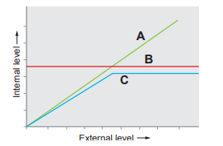
Serial number |
A |
B |
C |
A |
Conformer |
Regulator |
Partial Regulator |
B |
Regulator |
Partial Regulator |
Conformer |
C |
Partial Regulator |
Regulator |
Conformer |
D |
Regulator |
Conformer |
Partial Regulator |
Answer
A |
Conformer |
Regulator |
Partial Regulator |
9. The relationship between sucker fish and shark is dash
a) Competition
b) Commensalism
c) Predation
d) Parasitism.
Answer: b) Commensalism
10. Which of the following is correct for r-selected species
a) Large number of progeny with small size
b) large number of progeny with large size
c) small number of progeny with small size
d) small number of progeny with large size
Answer: a) Large number of progeny with small size
11. Animals that can move from fresh water to sea called as dash
a) Stenothermal
b) Eurythermal
c) Catadromous
d) Anadromous
Answer: c) Catadromous
12. Some organisms are able to maintain homeostasis by physical means dash
a) Conform
b) Regulate
c) Migrate
d) Suspend.
Answer: b) Regulate
13. What is a Habitat?
14. Define ecological niche.
15. What is Acclimatisation?
16. What is Pedogenesis?
17. What is soil permeability?
18. Differentiate between Eurytherms and Stenotherms.
19. Explain hibernation and aestivation with examples.
20. Give the diagnostic characters of a Biome?
21. Classify the aquatic biomes of Earth.
22. What are the ways by which organisms respond to abiotic factors?
23. Classify the adaptive traits found in organisms.
24. Differentiate Natality and Mortality.
25. Differentiate J and S shaped curve.
26. Give an account of population regulation.
27. Give an account of the properties of soil.
28. Differentiate between Tundra and Taiga Biomes.
29. List the adaptations seen in terrestrial animals.
30. Describe Population Age Distribution.
31. Describe Growth Models/Curves.
32. Tabulate and analysis of two species population interaction.